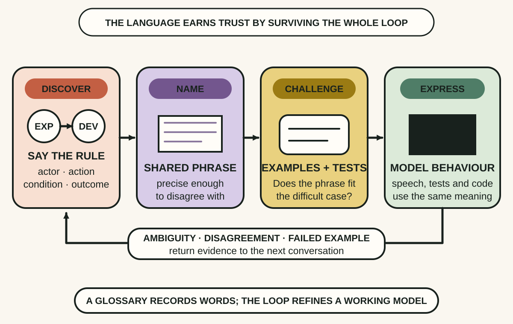
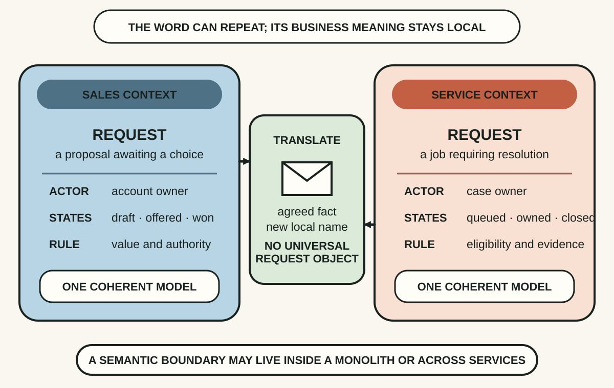
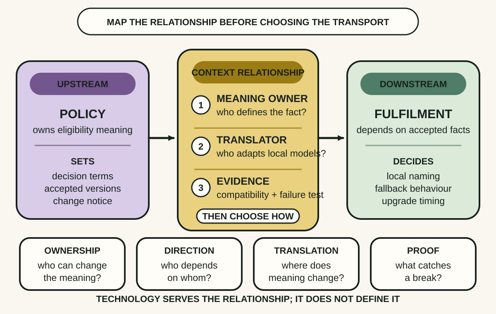

Daily lesson ·
Domain-Driven Design Distilled
Build software around meaning before machinery: refine a shared model language, protect each meaning inside a bounded context and make every crossing an explicit translation decision.
Idea 1
Make the model speak the team's language #
The idea
Vernon treats Ubiquitous Language as a language developed jointly by domain experts and software developers, not a glossary copied from the business or a naming scheme imposed after coding. The team tests words and phrases in conversation, examples, tests and source code, then refines them as its understanding changes.
The language earns its place by expressing real business behaviour precisely. An awkward phrase, two incompatible definitions or a rule that cannot be stated clearly is useful evidence that the model is still hiding a disagreement rather than representing shared understanding.

Why it matters
A team can agree on a label while disagreeing about the decision behind it. Making the same precise language appear in discussion, behaviour and tests exposes that mismatch before it becomes a confusing interface or a fragile branch in code.
Apply it today
Choose one active term such as request, approved, customer or complete, and write one sentence describing who does what and under which rule.
Compare the sentence with a domain expert, product owner or existing acceptance example. Record the first word or rule that does not survive the comparison.
Caveat or failure mode
Renaming classes to business nouns is not DDD if behaviour and rules remain vague. Building the language takes expert access and continuing effort; a stale glossary can create false confidence when speech, tests and production behaviour have already moved on.
Idea 2
Keep each meaning inside a boundary #
The idea
Vernon pairs Ubiquitous Language with Bounded Context. A model can stay internally coherent only within a boundary where its terms and rules have a specific meaning. The same word may legitimately describe a different concept elsewhere, so DDD does not demand one universal enterprise model.
A boundary is discovered by changes in language, responsibility, rules and business purpose. Making it explicit lets each model remain precise while forcing the team to acknowledge that data crossing the boundary may need translation rather than silent reuse.

Why it matters
A universal object often accumulates optional fields, contradictory states and ownership disputes because it is carrying several business concepts under one name. Local models make the differences visible and reduce the pressure to make every team change in lockstep.
Apply it today
Pick one object shared across two workflows and list its actor, lifecycle and deciding rule in each workflow.
If any of those differ, name the two candidate contexts and write the minimum fact that must cross between them.
Caveat or failure mode
A Bounded Context is not an automatic instruction to create a microservice, database or team. Too few boundaries muddle meaning; too many create translation and operational overhead. Validate the boundary with stable business distinctions and change patterns before hardening it in infrastructure.
Idea 3
Map the relationship before the integration #
The idea
Vernon describes Context Mapping as a way to model the relationship between Bounded Contexts. The map captures more than boxes and data flow: it makes inter-team dependency and the technical collaboration between models visible together.
Once the relationship is explicit, the team can decide who owns meaning, which direction change pressure travels and where translation belongs. An API, event, shared table or manual hand-off is then a chosen mechanism with stated obligations rather than an apparently neutral connection.

Why it matters
Hidden model coupling surfaces later as breaking changes, duplicated interpretation and arguments over who must adapt. Mapping the relationship exposes those costs while the team can still choose ownership, translation and tests deliberately.
Apply it today
Choose one integration and draw its two contexts with an arrow showing which side currently sets the meaning or contract.
Add who translates, how a breaking change is detected and what the dependent side does when the source is unavailable.
Caveat or failure mode
A context map is a current hypothesis, not a permanent architecture or proof of loose coupling. Team relationships, business ownership and system constraints can change. Keep the map small, revisit it after real failures or major changes, and back the stated contract with observable tests and operational behaviour.
Knowledge check · 6 questions
Learning check
Answer all 6, then check your answers. Your first result stays in this browser, and each explanation appears after you check. A 3-question review can appear on the homepage from tomorrow.
6 questions not yet answered.
Today's experiment · 10 minutes
Run a domain-language boundary probe
- Choose one overloaded term from an active product or workflow, such as request, status, customer or complete.
- Write one sentence using the term from each of two real screens, teams or business processes.
- Under each sentence, note the actor, decision, lifecycle and rule that give the term meaning there.
- If the meanings differ, name two candidate contexts and write one sentence describing the fact that must cross between them. If they match, record the evidence that supports one model.
- Circle one uncertainty and name the expert, example or compatibility test that could resolve it next.
Observable result: You finish with two testable meanings, a candidate boundary and one explicit translation question, without changing a service, schema or team structure.
Retrieval practice
Spaced recall
- From A Philosophy of Software Design: which complexity symptoms would show that a proposed boundary is leaking decisions rather than hiding them?
- From Designing Data-Intensive Applications: which compatibility assumption must be explicit when two mapped contexts evolve at different times?
Verification
Source notes
These links support the attributed claims and edition details; applications and extensions are labelled in the lesson.
- InformIT: Domain-Driven Design Distilled publication and first-edition details
- InformIT: authorised Domain-Driven Design Distilled sample chapter
- InformIT: Vaughn Vernon on Ubiquitous Language and Bounded Context
- InformIT: Vaughn Vernon on the costs and fit of DDD
- InformIT: Vaughn Vernon interview on Context Mapping
- Martin Fowler: Bounded Context pattern
- Martin Fowler: Ubiquitous Language pattern
One-sentence takeaway